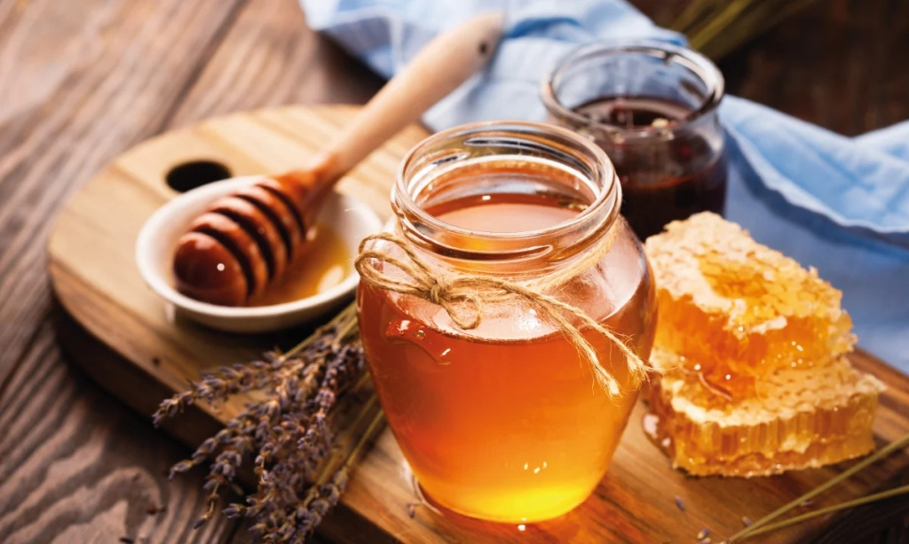
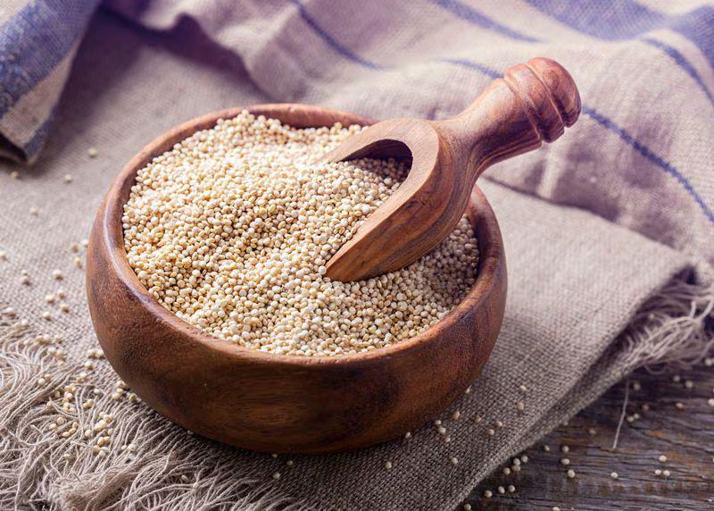

Miel Orgánica
$5,000 CLP por frasco de 500g
Stock: 50 frascos
Miel pura y orgánica producida por apicultores locales. Rica en antioxidantes y con un sabor inigualable, perfecta para endulzar de manera natural tus comidas y bebidas.
Del campo al hogar
Nuestros productos orgánicos están elaborados con ingredientes naturales y procesados de manera responsable para mantener sus beneficios saludables. Desde aceites y miel hasta granos y semillas, ofrecemos una selección que apoya un estilo de vida saludable y respetuoso con el medio ambiente. Estos productos son perfectos para quienes buscan opciones alimenticias que aporten bienestar sin comprometer el sabor ni la calidad.

$5,000 CLP por frasco de 500g
Stock: 50 frascos
Miel pura y orgánica producida por apicultores locales. Rica en antioxidantes y con un sabor inigualable, perfecta para endulzar de manera natural tus comidas y bebidas.

$3,000 CLP por kilo
Stock: 100 kilos
Quinua cultivada de manera sostenible. Superalimento rico en proteínas y aminoácidos, ideal para guarniciones y ensaladas saludables.